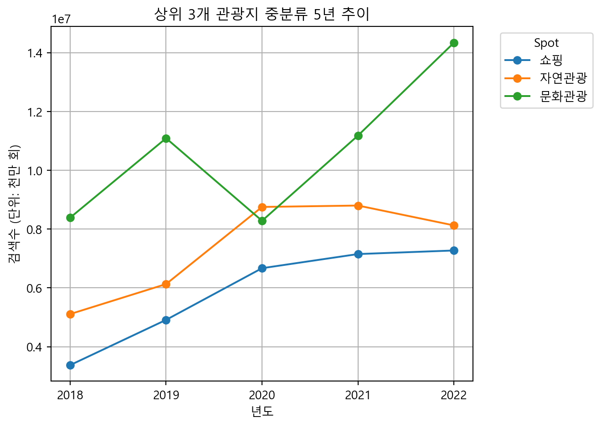

import numpy as np
import pandas as pd
tour_2018 = pd.read_csv('C:/Users/USER/Documents/LS빅데이터스쿨/PORTFOLIO/data/ranking_2018.csv', encoding='cp949')
tour_2019 = pd.read_csv('C:/Users/USER/Documents/LS빅데이터스쿨/PORTFOLIO/data/ranking_2019.csv', encoding='cp949')
tour_2020 = pd.read_csv('C:/Users/USER/Documents/LS빅데이터스쿨/PORTFOLIO/data/ranking_2020.csv', encoding='cp949')
tour_2021 = pd.read_csv('C:/Users/USER/Documents/LS빅데이터스쿨/PORTFOLIO/data/ranking_2021.csv', encoding='cp949')
tour_2022 = pd.read_csv('C:/Users/USER/Documents/LS빅데이터스쿨/PORTFOLIO/data/ranking_2022.csv', encoding='cp949')Project1-2. 지역별 관광지 검색 순위
데이터 전처리
데이터 불러오기
열 이름 변경
rename_dict = {'순위': 'ranking', '광역시/도': 'state', '시/군/구': 'city', '관광지명': 'spot',
'도로명주소': 'address', '중분류 카테고리': 'category_m', '소분류 카테고리': 'category_s', '검색건수': 'search_count'}
tour_2018.rename(columns=rename_dict, inplace=True)
tour_2019.rename(columns=rename_dict, inplace=True)
tour_2020.rename(columns=rename_dict, inplace=True)
tour_2021.rename(columns=rename_dict, inplace=True)
tour_2022.rename(columns=rename_dict, inplace=True)‘cate_remove’ 목록 정의
cate_remove = ['교통시설', '면세점', '백화점', '쇼핑몰', '대형마트', '기타쇼핑시설']
# 각 연도별 데이터에서 'cate_remove' 목록에 해당하는 카테고리를 제거
tour_2018 = tour_2018[~tour_2018['category_s'].isin(cate_remove)]
tour_2019 = tour_2019[~tour_2019['category_s'].isin(cate_remove)]
tour_2020 = tour_2020[~tour_2020['category_s'].isin(cate_remove)]
tour_2021 = tour_2021[~tour_2021['category_s'].isin(cate_remove)]
tour_2022 = tour_2022[~tour_2022['category_s'].isin(cate_remove)]각 데이터프레임에 연도 열 추가
tour_2018['year'] = 2018
tour_2019['year'] = 2019
tour_2020['year'] = 2020
tour_2021['year'] = 2021
tour_2022['year'] = 2022데이터 결합
tours = [tour_2018, tour_2019, tour_2020, tour_2021, tour_2022]
tour_total = pd.concat(tours, ignore_index=True)
# 불필요한 열 삭제
tour_total.drop(columns=['address', 'ranking'], inplace=True)‘combined_city’ 열 추가
tour_total['combined_city'] = tour_total['state'] + " " + tour_total['city']
# 결과 확인
tour_total.info()
print(tour_total.head())
print(tour_total['category_s'].unique()) # 카테고리 확인<class 'pandas.core.frame.DataFrame'>
RangeIndex: 1373 entries, 0 to 1372
Data columns (total 8 columns):
# Column Non-Null Count Dtype
--- ------ -------------- -----
0 state 1373 non-null object
1 city 1373 non-null object
2 spot 1373 non-null object
3 category_m 1373 non-null object
4 category_s 1373 non-null object
5 search_count 1373 non-null int64
6 year 1373 non-null int64
7 combined_city 1373 non-null object
dtypes: int64(2), object(6)
memory usage: 85.9+ KB
state city spot category_m category_s search_count year \
0 서울특별시 강남구 코엑스 문화관광 전시시설 456473 2018
1 경기도 용인시 처인구 에버랜드 문화관광 테마공원 330266 2018
2 서울특별시 동작구 노량진수산시장 쇼핑 시장 251985 2018
3 서울특별시 송파구 가락동농수산물도매시장 쇼핑 시장 231899 2018
4 서울특별시 용산구 CGV용산아이파크몰 문화관광 공연시설 227562 2018
combined_city
0 서울특별시 강남구
1 경기도 용인시 처인구
2 서울특별시 동작구
3 서울특별시 송파구
4 서울특별시 용산구
['전시시설' '테마공원' '시장' '공연시설' '자연경관(하천/해양)' '역사유적지' '도시공원' '기타문화관광지' '기타관광'
'종교성지' '자연생태' '레저스포츠시설' '랜드마크관광' '자연경관(산)' '복합관광시설' '자연공원' '육상레저스포츠'
'기타레저스포츠' '웰니스관광' '농/산/어촌체험' '자연관광(산)' '데이트코스' '수상레저스포츠']전처리한 데이터 파일 추출
# 전처리 파일 저장
tour_total.to_excel('C:/Users/USER/Documents/LS빅데이터스쿨/PORTFOLIO/pre_data/total_tour.xlsx', index=False)데이터 시각화
import numpy as np
import pandas as pd
import matplotlib as plt
tour_total = pd.read_csv('C:/Users/USER/Documents/LS빅데이터스쿨/PORTFOLIO/pre_data/total_tour.csv', encoding = 'cp949')
import matplotlib.pyplot as plt
plt.rcParams['font.family'] ='Malgun Gothic'
plt.rcParams['axes.unicode_minus'] =FalseC:\Users\USER\AppData\Local\Temp\ipykernel_6032\3780840232.py:5: DtypeWarning:
Columns (1,2,3,4,5,6,9) have mixed types. Specify dtype option on import or set low_memory=False.
1. 각 연도별 TOP3 관광지 구하기
# Top 3 순위 구하기
tour_total_rank = tour_total.groupby("spot")\
.agg(mean = ("search_count","mean"))
tour_total_rank.sort_values(["mean"], ascending=False)
# 그래프 그리기
from matplotlib.ticker import MaxNLocator
ranking1 = tour_total.query("spot=='에버랜드'")
ranking2 = tour_total.query("spot=='속초관광수산시장'")
ranking3 = tour_total.query("spot=='코엑스'")
plt.clf()
plt.plot(ranking1["year"], ranking1["search_count"], marker='o', label="에버랜드")
plt.plot(ranking2["year"], ranking2["search_count"], marker='o', label='속초관광수산시장')
plt.plot(ranking3["year"], ranking3["search_count"], marker='o', label='코엑스')
plt.gca().xaxis.set_major_locator(MaxNLocator(integer=True))
plt.title('상위 3개 관광지 5년 추이')
plt.xlabel('년도')
plt.ylabel('검색수')
plt.legend(title='Spot', bbox_to_anchor=(1.05, 1), loc='upper left', prop={'size': 10})
plt.grid(True)
plt.tight_layout()
plt.show()
plt.clf()
<Figure size 672x480 with 0 Axes>2. 각 연도별 TOP3 관광지 중분류 구하기
# 중분류 수정본
# tour_total["year"] = tour_total["year"].astype(int)
# Top 3 순위 구하기
tour_total_c = tour_total.groupby("category_m")\
.agg(c_sum = ("search_count","sum"))
tour_total_c.sort_values(["c_sum"], ascending=False)
# 그래프 그리기
from matplotlib.ticker import MaxNLocator
tour_total_c2 = tour_total.groupby(["year","category_m"], as_index=False)\
.agg(category_sum = ("search_count","sum"))
ranking4 = tour_total_c2.query("category_m=='쇼핑'")
ranking5 = tour_total_c2.query("category_m=='자연관광'")
ranking6 = tour_total_c2.query("category_m=='문화관광'")
plt.clf()
plt.plot(ranking4["year"], ranking4["category_sum"], marker='o', label="쇼핑")
plt.plot(ranking5["year"], ranking5["category_sum"], marker='o', label='자연관광')
plt.plot(ranking6["year"], ranking6["category_sum"], marker='o', label='문화관광')
plt.gca().xaxis.set_major_locator(MaxNLocator(integer=True))
plt.title('상위 3개 관광지 중분류 5년 추이')
plt.xlabel('년도')
plt.ylabel('검색수 (단위: 천만 회)')
plt.legend(title='Spot', bbox_to_anchor=(1.05, 1), loc='upper left', prop={'size': 10})
plt.grid(True)
plt.tight_layout()
plt.show()
결론
- 상위 3개 관광지 5년 추이 2020년 속초 수산시장이 1위를 한 이유는 코로나 시기 언택트 호캉스의 유행으로 여행 횟수가 감소하지 않은 것으로 보입니다. 2022년 에버랜드 1위 이유는 푸바오 인기에 입장객이 늘어났습니다.
- 2018~2022 관광지 중분류 Top3 문화관광이 2020년 대폭 감소한 이유는 코로나 19 거리두기의 영향으로 보임. 자연관광이 2020년 1위인 이유는 사람들이 붐비는 곳에서 벗어나 자연을 즐기려는 사람이 많았던 것으로 예상됨.